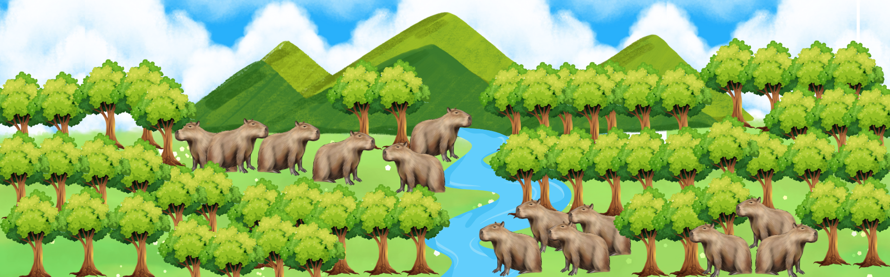
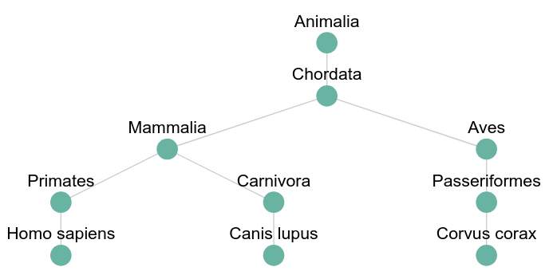

Nesta atividade, você vai construir uma árvore 🌲 que organiza alguns animais de acordo com a classificação científica 🦁🐦. A árvore vai ficar assim:
Animalia
└── Chordata
├── Mammalia
│ ├── Primates
│ │ └── Homo sapiens
│ └── Carnivora
│ └── Canis lupus
└── Aves
└── Passeriformes
└── Corvus corax
O objetivo é verificar se a árvore que você criar está certinha, igual à estrutura que mostramos 🌱. Use o editor para construir a árvore e depois clique em "Executar Código" para ver se ficou certo 💻✅.

Siga as instruções abaixo para preencher o código e depois clique em "Executar" para ver a árvore prontinha! 🌳✨
Primeiro, vamos entender o que é um nó 🪴. Um nó é como um "bloco" da nossa árvore 🌲, e dentro dele temos um nome. Esse nome vai ser a classificação de cada grupo de animais 🦁🐦. Cada nó também tem dois "braços" (que chamamos de ponteiros 🤖): um para o lado esquerdo (filho à esquerda) e um para o lado direito (filho à direita).
class Node {
data: string; // Aqui vai o nome do animal ou grupo de animais
left: Node | null;
right: Node | null;
constructor(data: string) {
this.data = data;
this.left = null;
this.right = null;
}
}
Agora, vamos criar a árvore de animais! 🐯🦜 Vamos usar uma função chamada createTree para criar os nós e montá-la 🌟:
O número 1 vai ser o começo da árvore (a raiz 🌱), o número 2 e o número 3 vão ser filhos de 1, e 4 e 5 vão ser filhos de 2. Vamos construir nossa árvore binária! 🏗️
function createTree(): Node {
const root = new Node("Animalia"); // Raiz da árvore 🌱
root.left = new Node("Chordata"); // Nó esquerdo 🦎
root.right = new Node("Aves"); // Nó direito 🐦
root.left.left = new Node("Mammalia"); // Filho esquerdo do nó Chordata 🐘
root.left.right = new Node("Carnivora"); // Filho direito do nó Chordata 🐺
return root; // Retorna a árvore pronta 🌳
}
⚠️ IMPORTANTE: O nome que usamos no nó (chamado de data) deve ser o nome de cada grupo de animais 🦓🦒, como "Mammalia" ou "Aves". Isso vai fazer nossa árvore refletir a classificação científica direitinho! 🧬🌍
Agora que você já entendeu como criar a árvore, é hora de rodar o código 🖥️ para ver ela prontinha! 🎉
Você vai usar a função createTree para criar a árvore 🌳 e, depois, só clicar em "Executar Código" para ver o resultado! 🎯
// Criando a árvore 🌲
const rootNode = createTree();
Basta clicar no botão "Executar Código" e pronto! 🎉🎉